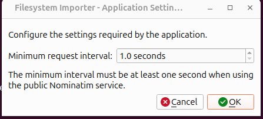
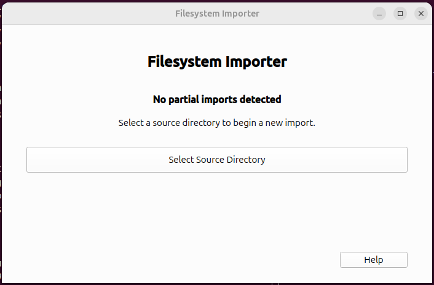
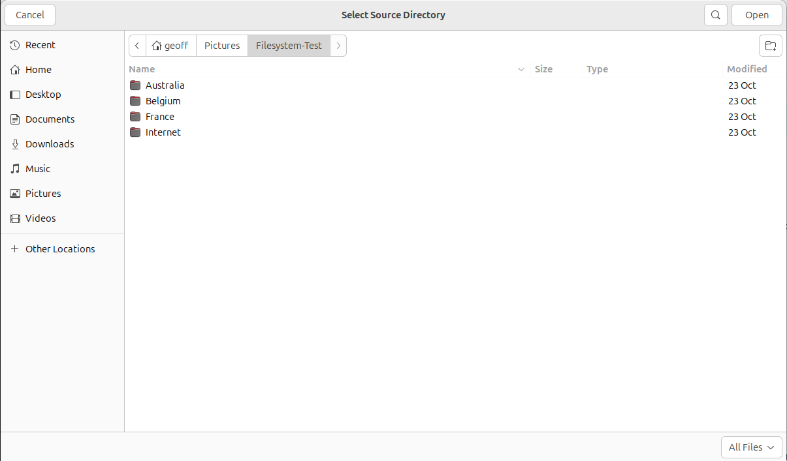
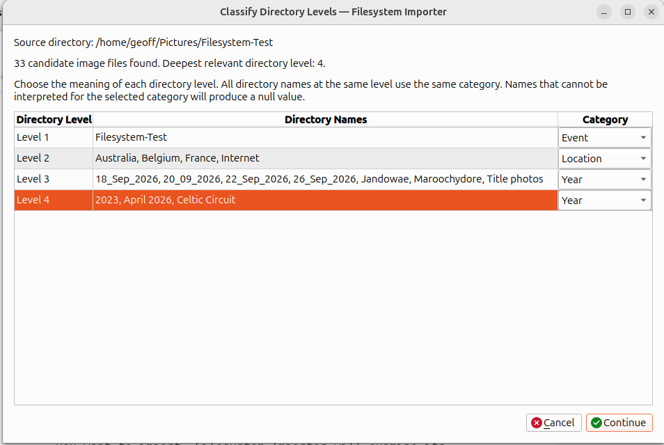
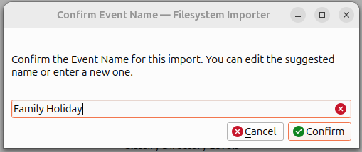
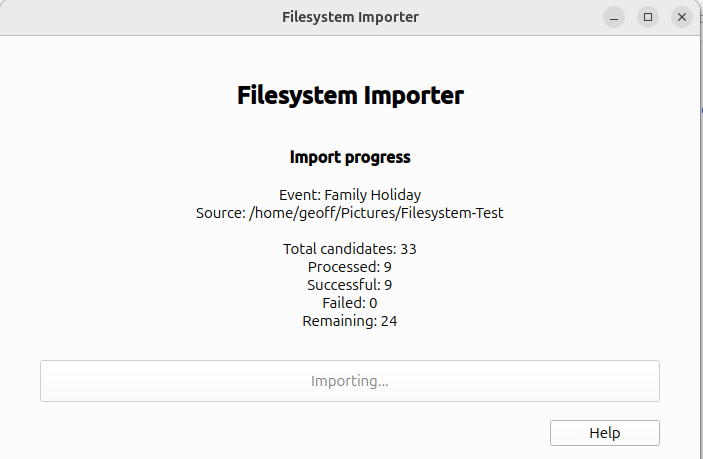
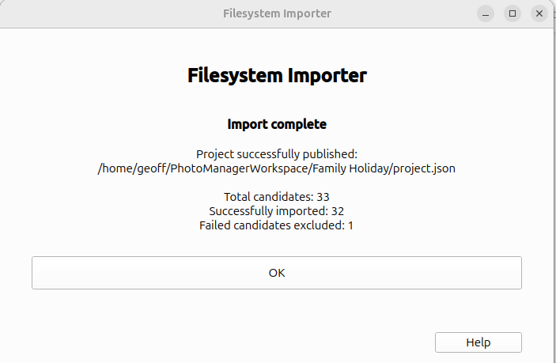
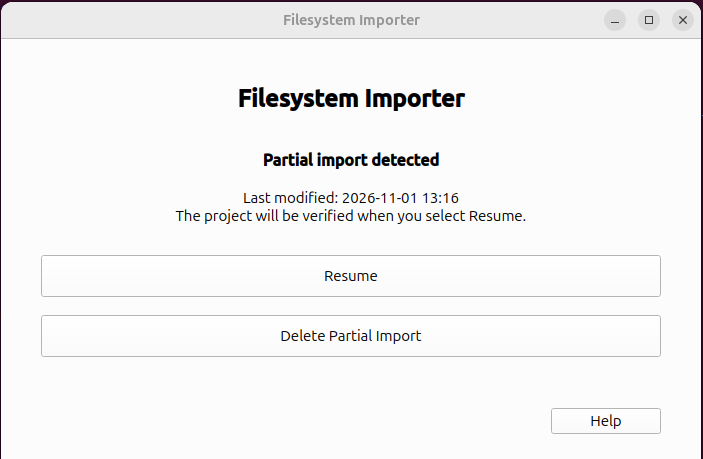

Filesystem Importer Help
About Filesystem Importer
Version 0.1.0
Filesystem Importer transfers photographs from an existing folder structure into a Photo Manager project for local archiving.
It uses information recorded in the photographs, together with information available from their folder structure, to help establish the contextual information associated with each photo in Photo Manager.
Launching Filesystem Importer

To launch Filesystem Importer, open Show Apps in Ubuntu and search for Filesystem Importer. Select the application icon to start it.
If you have added Filesystem Importer to your dock, you can launch it by clicking its icon there instead.
First Run — Application Settings
The first time Filesystem Importer starts, it displays the Application Settings dialog. This prevents overloading the Nominatum web service that is used to help determine the location for photos.

The Minimum request interval is set to 1.0 seconds by default. When using the public Nominatim service, this interval must be at least one second.
Click OK to accept the displayed setting and continue.
The Initial Screen
After the first-run settings have been accepted, Filesystem Importer displays its initial screen. When there is no unfinished import to resume, the screen indicates that no partial imports have been detected.

To begin a new import, click Select Source Directory. You will then be able to choose the directory containing the photographs you want to import.
Click Help to open this help page.
Selecting the Source Directory
Click Select Source Directory on the initial screen to open the directory chooser.

Choosing the Source Directory
Browse to the directory containing the photographs you want to import. The directory can contain photographs directly, photographs organised into subdirectories, or a combination of these.
If your photographs are organised into a directory structure, select the highest-level directory containing the collection you want to import. Filesystem Importer will examine its subdirectories when looking for photographs.
When you have located the correct directory, click Open to select it.
If you decide not to proceed, click Cancel to return to the initial screen without selecting a directory.
Classifying Directory Levels
After selecting a source directory, Filesystem Importer examines its directory structure and identifies the levels containing candidate photographs.
The Classify Directory Levels screen displays the source directory, the number of candidate image files found, and the deepest relevant directory level.

The table shows the directory levels beneath the selected source directory. For each level, it lists the directory names found at that level and allows you to select their meaning.
Assigning Categories
Each directory level may be assigned a category, such as Event, Location or Year. Or, you may select Ignore, in which case no category is assigned at that level.
All directories at the same level use the same category. For example, if Level 2 is classified as Location, every directory at that level will attempt to be interpreted as a location.
Choose the category that best describes the directory names at each level. A directory name that cannot be interpreted for the selected category will produce a null value.
Understanding Directory Inheritance
Directory inheritance allows Filesystem Importer to obtain metadata from the directory structure rather than requiring every photograph to have its own information entered.
For each photograph, the importer works upwards through the directory structure, starting with the photograph's containing directory and moving towards the selected source directory. It looks for the first valid value for each of the following fields:
- Event: The name of a directory classified as Event.
- Location: The name of a directory classified as Location.
- Year: The name of a directory classified as Year.
- Info: The name of a directory classified as Info.
Each field is searched for independently. The first valid value found for that field is used. If a directory name cannot be interpreted as a valid value for its assigned category, the importer continues upwards to the next directory.
This means that a photograph can inherit its Event from one directory level, its Location from another, and its Year or Info from yet another. The values do not all have to come from the same directory.
Directory inheritance is used when a suitable value cannot be obtained from the photograph's own metadata. Information already available from the photograph, such as its EXIF data or embedded comment, may take precedence.
Continue
Assign a category, or Ignore, to each directory level. When you are satisfied with the classifications, click Continue to proceed.
Click Cancel to abandon the current selection and return to the previous stage.
Confirming the Event Name
After you continue from the directory classification screen, Filesystem Importer asks you to confirm the Event Name for the import.

A suggested name is provided automatically. You can accept this name or edit it to use a different name for the event.
Editing the Event Name
Click in the text field to change the suggested name. Choose a meaningful name that will help identify the event associated with the imported photographs.
Confirm
When you are satisfied with the name, click Confirm to continue with the import.
Cancel
Click Cancel to abandon the current operation and and return to directory classification.
Importing Photographs
After confirming the Event Name, Filesystem Importer begins processing the photographs found in the source directory and its subdirectories.

The screen displays the Event Name and source directory, together with statistics showing the progress of the import.
Import Progress
The progress information includes:
- Total candidates: The total number of candidate image files identified in the source directory.
- Processed: The number of candidate files processed so far.
- Successful: The number of files successfully processed.
- Failed: The number of files that could not be processed successfully.
- Remaining: The number of candidate files still awaiting processing.
These figures are updated as the import proceeds, allowing you to monitor its progress.
During this stage the application displays Importing.... No further action is required. Allow the process to finish.
Help
Click Help to open this help page.
Import Complete
When Filesystem Importer has finished processing the candidate photographs, it publishes the completed project into the Photo Manager workspace.

Import Summary
The completion screen confirms where the project has been published and displays a summary of the import results.
-
Project successfully published:
The location of the completed project's
project.jsonfile in the Photo Manager workspace. - Total candidates: The total number of candidate image files identified for the import.
- Successfully imported: The number of photographs successfully imported into the project.
- Failed candidates excluded: The number of candidate files that could not be successfully imported and have therefore been excluded from the published project.
The numbers will vary depending on the source photographs and the outcome of the import.
OK
Click OK to acknowledge the completed import and return to the Filesystem Importer initial screen.
The published project is now available for use in Photo Manager.
Help
Click Help to open this help page.
Resuming an Interrupted Import
If an import is interrupted before completion, Filesystem Importer saves its progress so that the operation can be resumed later.
When you next launch Filesystem Importer, it checks for an unfinished import. If one is found, the application displays the Partial Import Detected screen.

The screen displays the date and time the partial import was last modified. This helps you identify the unfinished operation.
Resume
Click Resume to continue the interrupted import. Filesystem Importer first verifies the saved project before continuing.
The importer uses the saved progress information to continue processing the photographs.
Delete Partial Import
Click Delete Partial Import if you no longer wish to continue the unfinished import.
This removes the saved partial import. You will then be able to start a new import by selecting a source directory. Do not choose this option if you intend to resume or to manually recover the partial import.
Help
Click Help to open this help page.
Application Files and Data Locations
Filesystem Importer keeps its application files, user settings, logs and temporary importing data in separate locations. This section describes where these files are stored on Linux.
Installed Application
The installer places the application in the following directory within your home directory:
~/.local/opt/filesystem-importer/
This directory contains the application executable, its supporting libraries and the resources required to run it. These files should not normally need to be accessed or changed.
Application Settings and Data
Filesystem Importer stores its persistent user data in:
~/.local/share/filesystem-importer/
This directory contains the following files and subdirectories:
- settings.json: Stores the application settings, including the minimum interval between geocoding requests. These settings are retained between application sessions.
- tested-locations.json: The location cache. It stores the results of location validation so that previously checked location names do not need to be checked repeatedly.
- logs/: Contains the application log file.
Application Log
The log file is located at:
~/.local/share/filesystem-importer/logs/filesystem-importer.log
The log records application activity, importing operations and any errors or warnings encountered. It can be useful when investigating a problem with an import.
When reporting a problem, including the log file can help identify what happened.
Photo Manager Workspace and Staging Area
Filesystem Importer uses the workspace directory configured in Photo Manager. It reads the Photo Manager settings file at:
~/.config/photo_manager/settings.json
This is Photo Manager's own settings file. Filesystem Importer reads the configured workspace location from it.
While an import is in progress, Filesystem Importer uses the following directory beneath the Photo Manager workspace:
Importers/Filesystem/
This is the temporary staging area. It holds the importing checkpoint and photographs being processed. The checkpoint allows an interrupted import to be resumed.
Do not manually remove or modify files in this directory while an import is in progress.
Once the import has completed successfully, the completed project is published into the Photo Manager workspace. The final project location is displayed on the Import Complete screen.
Desktop Integration
The installer also creates the Ubuntu application launcher at:
~/.local/share/applications/filesystem-importer.desktop
Application icons are installed beneath:
~/.local/share/icons/hicolor/
These files allow Filesystem Importer to appear in the Ubuntu application menu and display its correct icon.